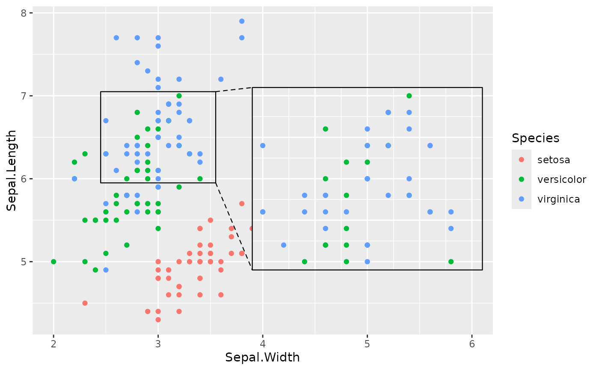
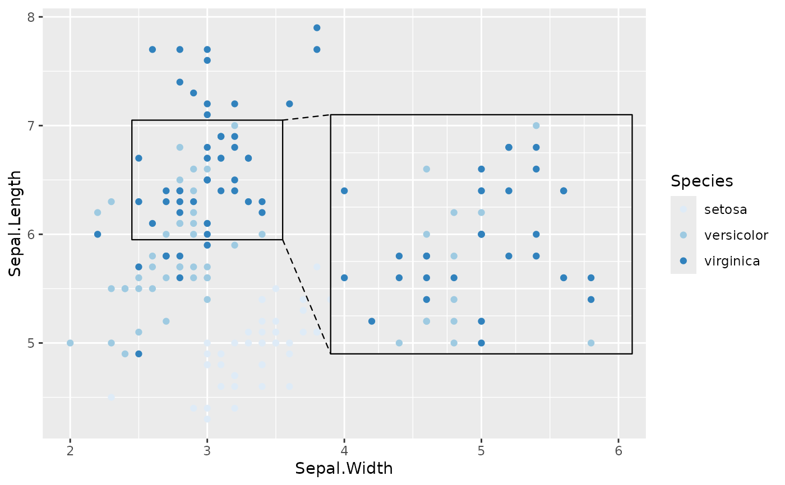

geom_magnify() creates a magnified inset of part of a ggplot. Optional
borders are drawn around the target and inset, along with projection lines
from one to the other. from gives the location of the target area,
and to gives the location of the inset. Usually, these are specified as
c(xmin, xmax, ymin, ymax).
Usage
geom_magnify(
mapping = NULL,
data = NULL,
stat = StatMagnify,
position = "identity",
...,
shape = c("rect", "ellipse", "outline"),
expand = 0.1,
aspect = c("free", "fixed"),
axes = "",
proj = c("facing", "corresponding", "single"),
shadow = FALSE,
corners = 0,
colour = "black",
linetype = 1,
target.linetype = linetype,
inset.linetype = linetype,
proj.linetype = 2,
alpha = 1,
linewidth = 0.4,
proj.fill = NULL,
plot = NULL,
shadow.args = list(sigma = 5, colour = "grey40", x_offset = 5, y_offset = 5),
recompute = FALSE,
scale.inset = 1,
proj.combine = TRUE,
na.rm = FALSE,
inherit.aes = TRUE
)
geom_magnify_tile(
mapping = NULL,
data = NULL,
stat = StatMagnifyTile,
position = "identity",
...,
shape = c("rect", "ellipse", "outline"),
expand = 0.1,
aspect = c("free", "fixed"),
axes = "",
proj = "facing",
shadow = FALSE,
corners = 0,
colour = "black",
linetype = 1,
target.linetype = linetype,
inset.linetype = linetype,
proj.linetype = 2,
alpha = 1,
linewidth = 0.4,
proj.fill = NULL,
plot = NULL,
shadow.args = list(sigma = 5, colour = "grey40", x_offset = 5, y_offset = 5),
recompute = FALSE,
scale.inset = 1,
proj.combine = TRUE,
na.rm = FALSE,
inherit.aes = FALSE
)Arguments
- mapping, data, stat, position, ..., na.rm
See e.g.
ggplot2::geom_point().- shape
Shape of the area to be magnified.
"rect"for a rectangle."ellipse"for an ellipse."outline"for the convex hull of points in the target area, or for map polygons.- expand
Number. Expand the target area and inset proportionally by this amount.
- aspect
String.
"fixed"to fix the aspect ratio (overridesymax).- axes
String. Which axes to plot in the inset?
"","x","y"or"xy".- proj
String. What style of projection lines to draw?
"facing"(the default),"corresponding"or"single". Can be abbreviated. See below.- shadow
Logical. Draw a shadow behind the inset plot? Requires the "ggfx" package.
- corners
Numeric between 0 and 1. Radius of rounded corners for the target area and inset. Only used if
shapeis"rect". 0.1 is a good starting value.- linetype, colour, alpha, linewidth
Linetype, colour, alpha and linewidth for borders and projection lines.
- target.linetype, inset.linetype, proj.linetype
Linetypes for specific components. Set to
0for no lines.- proj.fill
Colour to fill between the projection lines.
NULLfor no fill. Add alpha using e.g.scales::alpha(). Ignored whenproj = "single".- plot
Ggplot object to plot in the inset. If
NULL, defaults to the ggplot object to whichgeom_magnify()is added. Overridesaxesif set. Useinset_theme()to giveplotan appropriate theme.- shadow.args
List. Arguments to
ggfx::with_shadow().- recompute
Logical. If
TRUE, use lims() to replot the inset. Statistics, e.g. smoothing lines, will be recomputed using only the data in the target area. IfFALSE, use coord_cartesian() to replot the inset, keeping all the data.- scale.inset
Length 1 or 2 numeric. Normally, exactly the target area is shown on the inset. Sometimes you may wish to rescale the plot in the inset. Use 2 numbers to scale width and height separately.
- proj.combine
Logical. How to draw projection lines when more than one polygon/map area is magnified?
FALSEdraws one set of projection lines for each area.TRUEdraws a single set of lines for all the areas.- inherit.aes
If
FALSE, overrides the default aesthetics, rather than combining with them. This is most useful for helper functions that define both data and aesthetics and shouldn't inherit behaviour from the default plot specification, e.g.borders().
Details
Aesthetics
geom_magnify understand the following aesthetics (required aesthetics are in bold):
from
to
from and to can be vectors of length 4, like list(xmin, xmax, ymin, ymax).
These specify the bottom left and top right corners of the target area to
magnify, and the area for the magnified inset. The lists can optionally be
named: list(xmin = 1, xmax = 2, ymin = 3, ymax = 4).
Note: it is correct to use a list() for from and to, because x and
y scales may be different types, e.g. if x is a Date. However,
if x and y are both the same type, you may safely use c() instead of list().
Note: very early versions of ggmagnify used a
different order of coordinates: list(xmin, ymin, xmax, ymax).
Alternatively, from can be:
A data frame of points with two columns for
xandy, or agrid::grob()object. Points within the grob region (a polygon spanned by the data frame) will be magnified. Points should be on the same scale as the data, withdefault.units = "native"in the grob.shapewill be ignored.A logical vector. Points in the data where
fromisTRUEwill be surrounded by a rectangle, ellipse or outline.
Normally you'll set from and to in the call to geom_magnify(). You can
specify them as aesthetics, e.g. if you want different areas per facet. If
so, you may need to wrap them in a list() to make sure they are length one
per row of data. Only the first row per panel is used. (To magnify multiple
areas in one panel, use multiple calls to geom_magnify().)
Shapes
If shape = "ellipse" an elliptical area is magnified. This may not include
all points within the target area given by from.
If shape = "outline" then a convex hull will be drawn around points in
the target area. This only works if you are using ggplot2::geom_point() or some other
geom with aesthetics x and y; or with maps constructed by e.g. ggplot2::geom_sf().
In this case "outline" magnifies exactly the map features selected by from.
Projection lines
proj = "corresponding"or"facing"draws projection lines from the corners of the target to the corners of the inset."corresponding"always projects each corner of the target to the same corner of the inset."facing"sometimes draws lines between facing corners, when this looks cleaner.For non-rectangular insets,
"facing"and"corresponding"are the same.
"single"draws a single line from the midpoint of facing sides.To draw no lines, set
proj.linetype = 0.
Limitations
geom_magnify()uses masks. This requires R version 4.1.0 or higher, and a graphics device that supports masking. If you are using knitr, you may have luck with theragg_pngdevice. If your device doesn't support masks, onlyshape = "rect"will work, and the plot inset will not be clipped to the panel area.R graphics devices are not very predictable. My current recommendations are:
ragg_pngfor knitr;cairo_pdffor PDF output; RStudioAGGbackend for interactive output. Your mileage may vary.geom_magnify()uses dark magic to deal with faceting. It may break with older, or newer, versions of ggplot2. If you don't need faceting, and want your code to be robust to upgrades, setoptions(ggmagnify.safe_mode = TRUE)to use slightly less magic.By design,
geom_magnify()replots the original plot using new limits. It does not directly copy the target area pixels. The advantage is that you can e.g. add axes, plot points at an appropriate size, zoom in on data that's invisible in the main plot, or recompute derived graphics. If you want an exact pixel-by-pixel copy, use a different tool.geom_magnify()may break with discrete scales. This is a limitation in ggplot2 for now.Find a bug? Report it at https://github.com/hughjonesd/ggmagnify/issues/.
Examples
library(ggplot2)
ggp <- ggplot(iris, aes(Sepal.Width, Sepal.Length, colour = Species)) +
geom_point() + xlim(c(2, 6))
from <- list(2.5, 3.5, 6, 7)
to <- list(4, 6, 5, 7)
# Basic magnification
ggp + geom_magnify(from = from, to = to)

# Convex hull of points
ggp + geom_magnify(aes(from = Species == "setosa"), to = c(3, 5, 6, 8),
shape = "outline")
# Order matters
# `geom_magnify()` stores the plot when it is added to it:
ggp +
scale_color_brewer() +
geom_magnify(from = from, to = to)

# This will print the inset without the new scale:
ggp +
geom_magnify(from = from, to = to) +
scale_color_brewer()
# For more examples see https://github.com/hughjonesd/ggmagnify